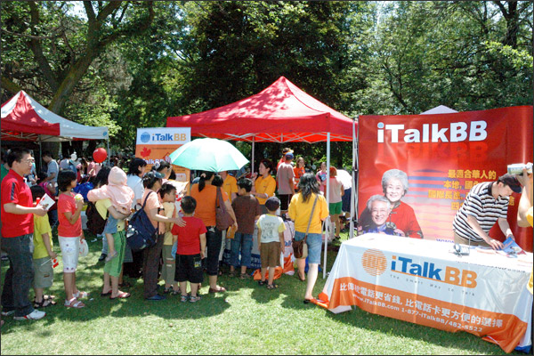

＂您不理財，財不理您＂，算算您的電話賬單
(美國弗吉尼亞州維也納訊)
看新科技可以怎麼幫您省錢！
經濟形式的下滑對在美華人來說無疑是一場嚴峻的考驗。如何有效管理自己的賬單，成為生活中很重要的一環。放棄一貫喜歡的奢侈品，節約從生活的小事做起，對於購買的每一件商品或服務，都要仔細考慮它的價值，從而讓自己的消費更加合理。
許多海外的華裔家庭都不可避免地負擔著高額的電話費來保持與遠隔重洋的家人的聯繫。自經濟危機以來，這部分的開銷也不得不放到重新考慮的範疇之內。要付基本的電話月租費，長途還要另外花錢。國際長途一筆帳，電話卡，網絡也要收費，一項一項加起來，費用就像滾雪球，越滾越大。若把所有花費加起來，一定會驚訝自己不知不覺就花了這麼多錢在打電話上。
長途電話費相當昂貴，而市面上號稱便宜的電話卡又帶來其他的問題，像不方便購買，使用起來還需要背一大串的密碼，更不用說通話質量不好，經常掉線或是打不通等諸多麻煩了。
如今不用再犯愁了，新科技為您提供簡便有效的省錢方式--用您的網絡取代您的固話聯機。一個簡單的操作--把您的電話插入一個轉接器中然後連上家中的網絡--將您的傳統家庭電話服務轉移到寬帶網絡中，這就是現在所謂的"VoIP電話服務"。聲音通過轉接器轉化為數字信號傳輸，不僅保證了話音的質量，更減少了信號傳輸的成本。
市面上有許多提供VoIP服務的公司，大大小小，參差不齊。其中作為VoIP產業龍頭之一的iTalkBB，一直秉承為海外華人提供更好的服務為宗旨，iTalkBB美國總經理雷麗表示："iTalkBB是真正的VoIP行業的先驅，我們承載了第一通從美國打往中國的VoIP電話。"iTalkBB的服務計劃可以完全替代您現有家庭電話服務，並且讓您的電話賬單節省60％以上。
iTalkBB可以免費保留您現有的電話號碼，只需要幾分鐘就可以簡單安裝iTalkBB的設備，您就可以輕鬆撥打本地、洲際和國際電話，便宜、方便、盡在iTalkBB！同時，iTalkBB還提供來電等待，三方通話，來電轉移等多種功能。
iTalkBB獨家提供的中國通用號碼構成iTalkBB的核心競爭力部分，中國通用號碼可以讓您在國內的親戚朋友直接打電話給您，不需要負擔國際通訊費用，這種特殊服務讓iTalkBB在行業中更加獨樹一幟。
住在加州的孫太太一家一直是iTalkBB的忠實用戶，孫太太表示："出於省錢的考慮，我開始使用iTalkBB的服務。他們有會講中文的服務代表，所以讓我轉換服務的過程比較簡單。我哥哥在多倫多，母親又在中國，我現在每天可以給他們打好幾次電話。完全不用擔心每次講太久而花太多錢。我媽媽很開心我使用iTalkBB，因為她從中國給我打電話變得很方便，撥一個中國號碼就給可以找到在美國的我。我現在電話費省了不少，通訊也更方便了，所以很高興，使用iTalkBB的服務實在是太好了。"
更多關於iTalkBB的服務，請諮詢24小時免費中英文熱線電話1－877－482－5522或是登陸www.iTalkBB.com. 此外，iTalkBB特別在9月26日到10月4日期間舉辦特別活動，紐約、芝加哥、費城、Rockville地區的朋友還可以到當地的世界書局免費使用iTalkBB打電話給中港台的親朋好友，送上中秋問候。
住在加州的孫太太一家一直是iTalkBB的忠實用戶，孫太太表示："出於省錢的考慮，我開始使用iTalkBB的服務。他們有會講中文的服務代表，所以讓我轉換服務的過程比較簡單。我哥哥在多倫多，母親又在中國，我現在每天可以給他們打好幾次電話。完全不用擔心每次講太久而花太多錢。我媽媽很開心我使用iTalkBB，因為她從中國給我打電話變得很方便，撥一個中國號碼就給可以找到在美國的我。我現在電話費省了不少，通訊也更方便了，所以很高興，使用iTalkBB的服務實在是太好了。"
關於 iTalkBB：
iTalkBB新電信是享譽全美的優秀通訊品牌，是國際電訊行業的領導和先驅。其以頂級全球網絡和前沿技術為依託，以最具競爭力的價格為客戶提供高質、清晰的本 地、國內及國際長途電話服務，以及高清中文電視直播、回播與點播服務。其電話業務能完全取代傳統家庭電話，並享受多重免費提供的附加功能如來電等待、三方通 話、來電顯示、呼叫轉移等。另有獨一無二的功能——中國大陸、台灣、香港、南韓當地號碼，當地親友只要撥打此號碼，就能接通到在美國的親友，而無需支付國際 長途費用 。iTalkBB的高清中文電視服務，自問世以來便受到了廣泛的好評和歡迎。超過五十個熱門頻道支持實時直播與48小時回看，海量最新電影電視劇綜藝節目免 費無限點播，讓用戶以最低價格盡享華語娛樂。iTalkBB新電信將不斷努力，與您共同成就更美好的生活。iTalkBB設有24小時中英文的客戶服務熱線: 1-877-482- 5522和官方網站www.iTalkBB.com，一年365天提供不間斷的服務與更多信息的查詢。